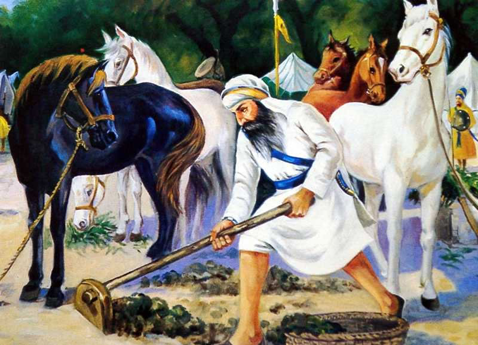

Nawab Kapur Singh


Nawab Kapur Singh was an eminent figure in Sikh history, known for his unwavering commitment
and courageous leadership during a critical period. According to the accounts documented in
Bhai Rattan Singh Bhangu's "Panth Parkash," Nawab Kapur Singh emerged as a prominent Sikh
leader in the mid-18th century, playing a pivotal role in organizing and unifying the Sikh
misls (confederacies) to counter the oppressive rule of the Mughal Empire. He displayed
remarkable military prowess and strategic acumen, leading his forces in various successful
battles against the Mughals and their allies. Nawab Kapur Singh's profound understanding of
Sikh philosophy and devotion to Guru Granth Sahib, the holy scripture of Sikhs, infused a
spiritual dimension into his leadership, inspiring his followers to fight for justice and
the preservation of Sikh values. Under his guidance, the Khalsa Panth (Sikh community)
experienced a resurgence and witnessed the establishment of a distinct identity that laid
the foundation for future Sikh sovereignty. Nawab Kapur Singh's indomitable spirit and
unwavering commitment to the Sikh cause continue to be celebrated and revered by Sikhs
worldwide as an embodiment of bravery, righteousness, and resilience.